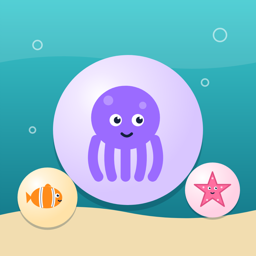

Tidepool Merge
Swipe to merge sea creatures, from tiny krill to the blue whale, and ride the tide for double points.
Support
Found a bug or have an idea? Email cpdigicomm@gmail.com and include your iPhone model and iOS version.
How to play
Swipe to slide every creature. Two of the same kind merge into the next creature.
The tide: the ring above the board counts down your moves. When it hits zero, the tide sweeps the whole pool in the arrow's direction. That's a free move, and tide merges score double.
Expeditions: reach the goal creature before you run out of moves. Rocks block slides and crack when creatures merge next to them.
FAQ
Does it need internet?
No. Everything works offline, and your game saves after every move.
How many undos do I get?
3 per game, and you can even use them from the game-over screen. After that, a short optional video gives 3 more. Offline, it's free.
Can I see numbers on the creatures?
Yes: Settings → Show level numbers.
Will I lose progress if I delete the app?
Yes. Progress is stored only on your device.